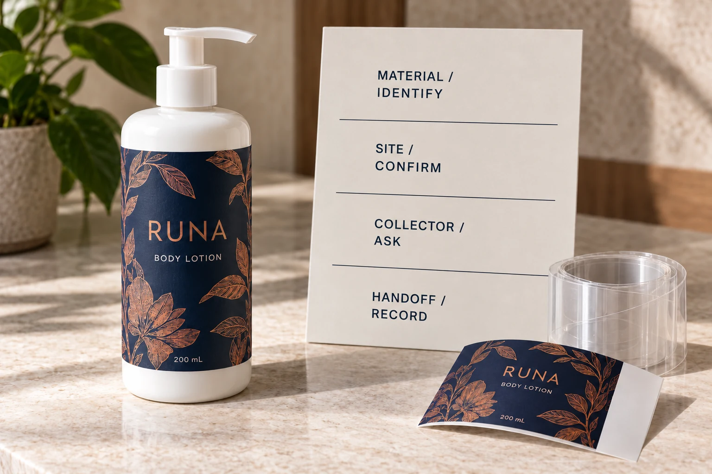

Identify which material leaves the applicator
The face label remains on the container. The release liner supports the adhesive label before dispensing and becomes a separate material stream after application. Do not describe both simply as label waste.
CELAB's technical paper on filmic release liners explains the liner's supporting and release functions. It also distinguishes film-based liner materials and discusses the effect of contamination in recycling. Its 2021 technical review is background, not evidence that a particular collector accepts your site's material today.
Obtain the actual liner reference from the label supplier. A clear face stock does not establish that its backing is the same polymer. Likewise, a paper-looking carrier needs identifying rather than assigning it to the ordinary office-paper stream by appearance.
Locate the site where the liner is generated
Record the actual application location and the person responsible for its material handling. A collection arrangement at the brand's office does not solve the backing generated at a contract filler in another region.
Ask how the used liner currently leaves the line: wound on a core, loose, cut or mixed with other material. Identify what can realistically remain separate. Do not promise a neat collection stream that the site's current equipment and handling do not produce.
Keep this conversation distinct from storing unused rolls. Our printed label storage guide concerns stock waiting for application. A spent-liner collection plan begins after that supporting material has done its job.
Obtain acceptance before selecting a collection bin
Ask the site's relevant collector or recovery operator what material description, sample or specification it needs to assess acceptance. Confirm whether it accepts the identified liner, at that location, under which current conditions.
Request its requirements for separation, contamination, packing, quantities and collection logistics. These are terms to obtain from the actual receiving party, not universal instructions supplied by this article. A website stating that film recycling exists is not an agreement to collect a particular load.
CELAB's filmic-liner paper flags printed labels and adhesive among contamination concerns. Use that as a reason to ask the collector specific questions. Do not transfer a numeric tolerance from a technical paper to your own stream, or assume its filmic guidance establishes acceptance of a paper liner.
Keep exceptions out of the ordinary stream until clarified
A spent carrier with remaining labels, an unused rejected roll and clean backing from normal application may present different material combinations. Identify them separately and ask how the receiving party wants each handled.
The site needs a practical instruction for exceptions. Who decides where an uncertain roll goes? How is it marked while the question is resolved? What happens when the supplier changes the liner construction? Those questions prevent a collector's acceptance of one stream from being stretched into approval of everything beside the line.
This guide does not prescribe handling of hazardous residues or establish local waste obligations. The site's responsible personnel and receiving service must determine applicable arrangements. Do not invent a disposal route when the material or acceptance is unknown.

Make the collection brief part of the procurement handoff
Use one shared record rather than a general sustainability phrase on the purchase order:
| Field | Information to obtain | Responsible party to involve |
|---|---|---|
| Material | Actual liner reference and relevant construction details | Label supplier |
| Generation site | Addressed operational location and contact | Filling or application team |
| Stream | Normal output form and planned separation | Site material-handling owner |
| Exceptions | Remaining labels, mixed material and unclear stock | Site and receiving collector |
| Acceptance | Current written requirements and any needed sample review | Actual collector or recovery operator |
| Logistics | Agreed packing, collection terms and responsibilities | Site and contracted service |
| Evidence | Handoff record and scope of any reported outcome | Named brand/site owner |
The table is an editorial coordination tool. It promises no collection volume, cost saving, recycling percentage or service from YT Labels. Keep unanswered requirements pending and identify the next person who can resolve them.
Compare the two locations that change the plan
Consider a hypothetical brand applying labels itself. It can identify the liner directly, consult its current service provider and arrange separation where the backing is generated. A manageable local route may be possible if acceptance is confirmed.
Another brand ships printed rolls to an overseas co-packer. It needs that site's participation and local receiving arrangements. Sending a collection instruction based on a different country's service can leave the actual operator with no usable outlet.
The useful purchasing decision is therefore not whether one website calls the material recyclable. It is whether the identified stream has an agreed next recipient and a workable handoff at the actual site.
Keep product-pack claims outside the liner result
Even a documented collection of backing does not establish that the decorated bottle is recyclable in every market. The spent liner and the applied label/container combination follow different paths.
The removable versus wash-off guide discusses a different stage: the label's intended removal from the pack. Keep evidence for that stage separate. Avoid turning a successful liner handoff into an unsupported claim about the whole product's environmental performance.
For custom cosmetic labels, send the container, artwork, dimensions, quantity by design and application location. Ask for the actual proposed liner identification and include any confirmed requirements from the receiving site.
Use the inquiry form to prepare your message, then send specifications and collector requirements through email or WhatsApp. The form does not upload attachments. Agree the material and the handoff before promising what happens to the backing after the filling run.